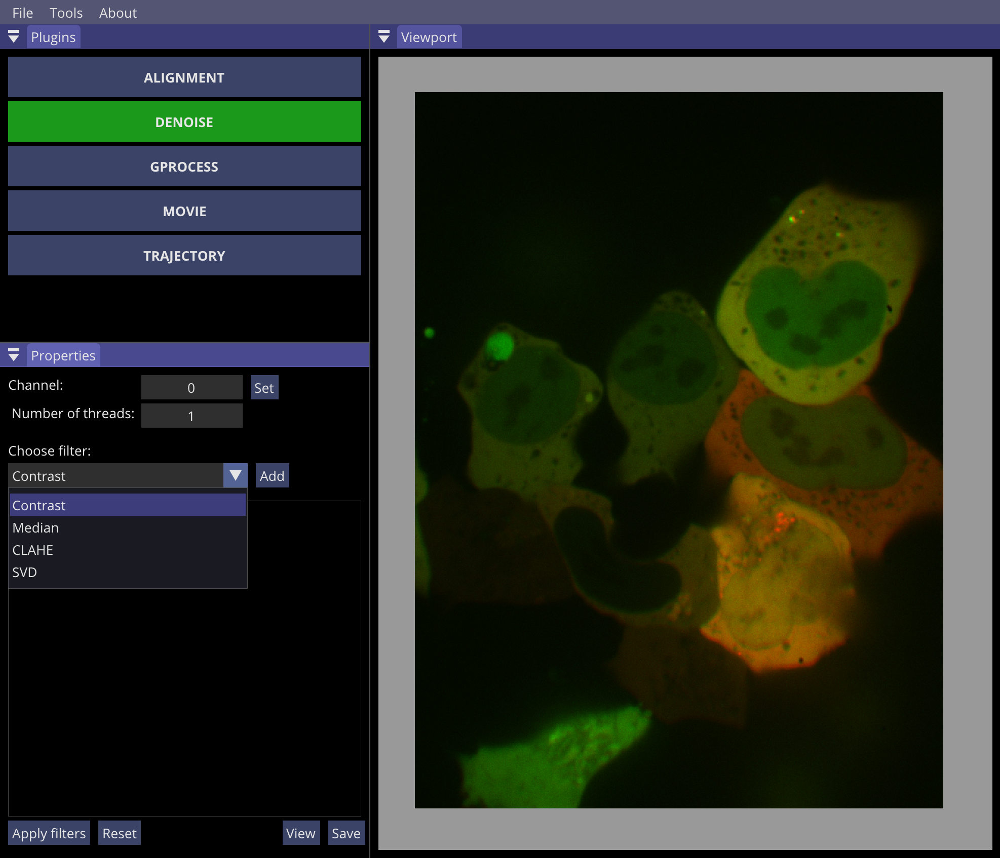

Denoise plugin
On the course of time, I needed to implement several filters in order to analyze microscopy images. Even though these filters are not exactly necessary for diffusion dynamics (the initial goal of GP-Tool), I thought of sharing some of the algorithms that I find myself using the most frequently. These filters are: Contrast, Median, CLAHE and SVD. In the next few sections I describe the basic idea behind them. Nonetheless, a few remarks should be made before hand. I would suggest to NOT use these filters in movies where diffision parameters will be estimated, even more importantly for the SVD filter. Secondly, all signal values within this plugin are considered to be in the range 0 to 1, lowest to higheset. Finally, I would also suggest the user to keep a close eye on the RAM usage while using this plugin. Computers with 16GB or more should be fine, however 8GB RAM could be too little depending on the movie.
Using this plugin is quite simple. Initially the user can setup which channel will be treated and the number of threads to be used during treatment. There is a cap for the total number of cores the user's computer has. Then one can choose a combination of filters to be applied. Filters will be applied from top to bottom, following the numbering presented. At the bottom of the panel, the user can apply filters, reset channel, save and view results. Notice that this treatment won't alter the original movie presented in the viewport.
Constrast
Perhaps the most basic of all filters. It will stretch or shrink the signal to fit the range set by the user. For more information consider here. As said before, the plugin will use values between 0 and 1. Differently, the user can set values -1 for autocontrast.Median filter
The median filter will set for every pixel in the image the median value presented in a rectangle with dimensions set by the user centered on given pixel. For this reason, this filter will be very efficient in removing random noise present in certain pixels. For this filter, the user can set the size of this rectangle. For more information, consider here.CLAHE: Contrast Limited Adaptative Histogram Equalization
CLAHE is approppriate when the contrast of an image is position dependent, that is, parts of an image are bright while others are dark and the user wants to bring the signal of all parts into a more homogeneous average signal. For more information, consider here. To use this filter, the user must define a specific tile size in which equalization will be applied and define a threshold cliping value used to stitch the signal of each tile.SVD: Single Value Decomposition
SVD is the most sofisticated and computer intensive method that I propose. In a box, the algorithm will use similarities found in a user defined number of frames (slice) for every pixel and approximate the final value as a accumulation of common patterns found in this slice, where the first values are contain the more relevant information for the overall signal, in that sense, the more values are accumulated (rank) the more similar the result will be to the original. For that reason, this filter is very good in removing high frequency noise whilst preserving shapes and edges. For a dive into linear algebra and decomposition, consider here.
A warning must be raise here. As this filter will search for extra information for each pixel in different frames, the temporal correlation existent in the trajecory of tagged spots will be alterad. For that reason, I advise to NOT use this filter when correct values of diffusion properties are to be estimated.
Example
To give a flavor of what we can do with this small combination of filters, I propose the follwing example. All the filters were used in the following order:
- SVD to remove most of the noise. Notice I use a slice of 10 frames for each image and set set rank equals one, so only the most relevant information is captured.
- CLAHE is then used to bring all the cells into a similar signal range.
- After that, a small median kernel (3x3) is use to remove any remaining noise enhanced by CLAHE.
- Finally, I run autocontrast (-1 set for low and high range) to bring the signal into a beatufill final image.